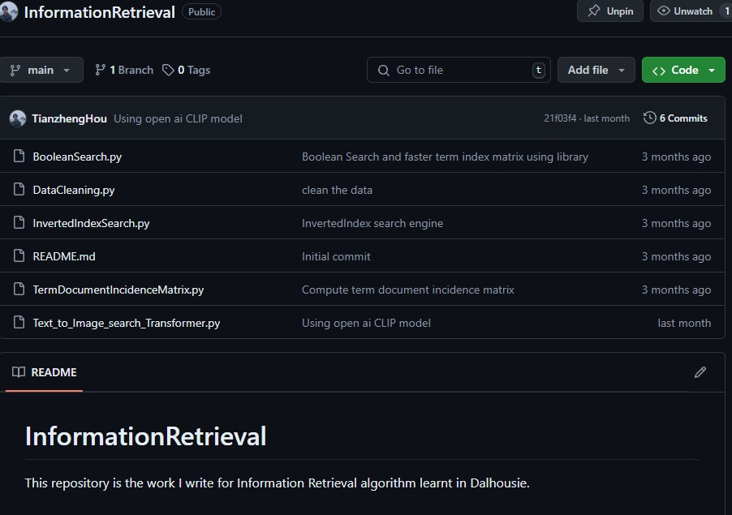

About the Repository
This repository showcases my work on Information Retrieval algorithms, which I studied at Dalhousie University. It includes various scripts that implement different retrieval methods, focusing on optimizing search efficiency and accuracy.
The repository reflects my interest in how information can be systematically indexed, retrieved, and processed to deliver relevant search results. You can learn more about my background and interests on the About Me page.
Link To Repository >>
